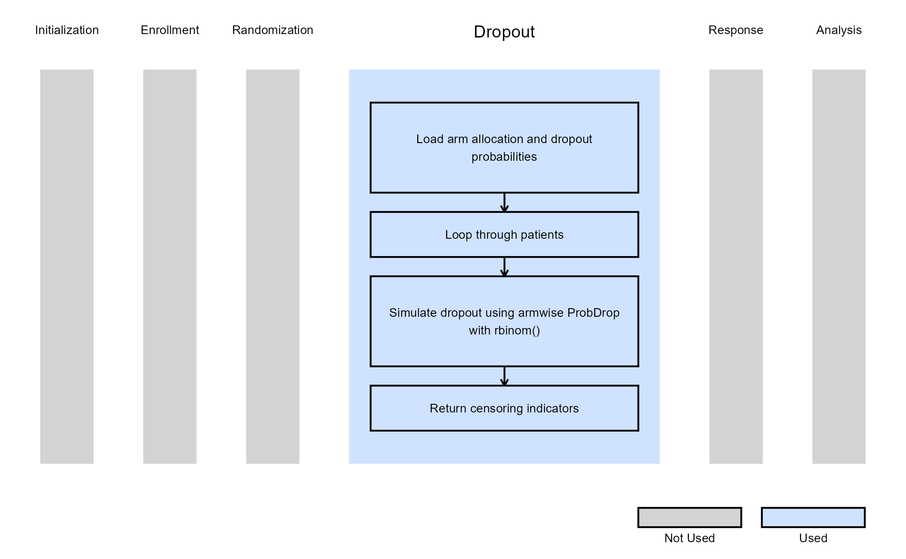

Multiple Arm, Single Endpoint - Patient Dropout
Gabriel Potvin and Anoop Singh Rawat
February 16, 2026
MultiArmPatientDropout.RmdThis example is related to the Integration Point: Dropout. Click the link for setup instructions, variable details, and additional information about this integration point.
- Study objective: Multiple Arm Confirmatory
- Number of endpoints: Single Endpoint
-
Endpoint type:
- Continuous or Binary Outcome for Example 1
- Task: Explore
Introduction
In multi-arm studies, dropout rates often differ across treatment groups due to varying efficacy, tolerability, or burden of treatment. Modeling these differences is essential for accurate trial simulation, as dropout can impact both power and interpretation of results.
In the following examples, we demonstrate how to integrate a custom dropout distribution into East Horizon through R integration. We focus on two common approaches to modeling dropout:
- Armwise continuous/binary dropout using dropout probabilities to identify completers and non-completers.
In the R directory of this example you will find the following R files:
- GenerateCensoringMultiArmUsingBinomialProportion.R - The R function named GenerateCensoringMultiArmUsingBinomialProportion in the file is used to perform multiple arm dropout with continuous or binary outcome as described in Example 1 below.
Example 1 - Dropout Using Binomial Proportion (Continuous or Binary Outcome)
This example is related to this R file: GenerateCensoringMultiArmUsingBinomialProportion.R
The R function
GenerateCensoringMultiArmUsingBinomialProportion generates the
censoring indicator (CensorInd) for multi-arm trial
designs, where each arm can have its own dropout probability. This
allows users to simulate more realistic scenarios in which patients in
different treatment arms may discontinue participation at different
rates (e.g., due to safety or tolerability differences).
Dropout is modeled using armwise dropout probabilities
(ProbDrop), with each subject’s completion status
determined by a binomial draw based on their assigned arm. The resulting
binary vector indicates whether each subject completed the study
(1) or dropped out (0).
This function does not use user-defined parameters, but instead uses parameters specified in East Horizon. Refer to the table below for details.
| Name of the parameter in East Horizon | Where to find the parameter in East Horizon | Name of the variable in the R script |
|---|---|---|
| Probability of Dropout for Control Arm | Response Card, Dropout Rate tab | |
| Probability of Dropout for Arm 1 | Response Card, Dropout Rate tab | |
| Probability of Dropout for Arm 2 | Response Card, Dropout Rate tab | |
| … |
Steps:
- For each patient, identify their assigned arm using
TreatmentID. - Retrieve the arm-specific dropout probability:
pd = ProbDrop[ armIndex ]. - Draw a random sample from a Bernoulli distribution with (completion probability).
- The generated sample serves as a censoring indicator:
-
1 indicates a patient who completes the trial (does
not drop out).
- 0 indicates a patient who drops out (non-completer).
-
1 indicates a patient who completes the trial (does
not drop out).
The figure below illustrates where this example fits within the R integration points of Cytel products, accompanied by a flowchart outlining the general steps performed by the R code.
